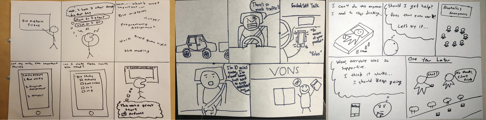
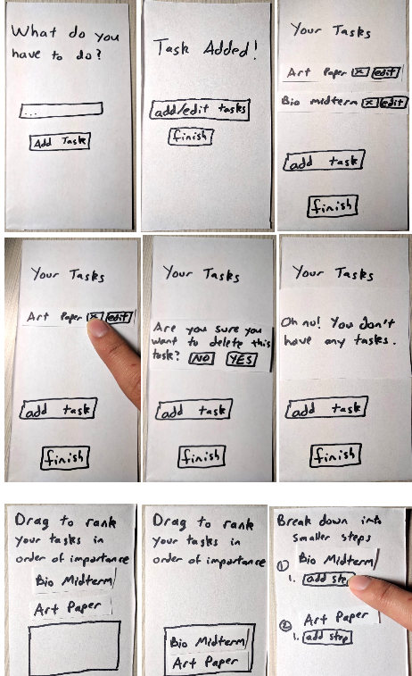
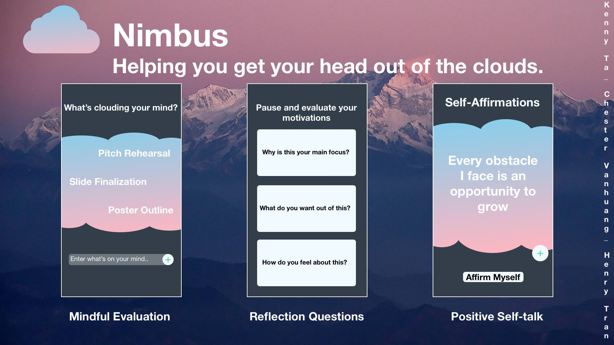

Henry Tran - Nimbus
Nimbus
"Nimbus is an app that allows users to break down an immediate goal into actionable steps through mindful practices such as reflection and self-affirmations to reach cloud nine."
Introduction
In this course, Cogs 120/CSE 170, a team of three were required to develop a functioning mobile app with the intention of human-centered design and user interaction in mind. With the help of Professor Scott Klemmer, we developed an app that had the intention of mindful practices to help us in our day to day lives. We had 8 weeks to come up with an app and with my peers we accomplished this goal. Our app is intended to help users who feel stressed in the moment reevaluate their thoughts and work toward one goal that they really need to focus on.
Needfinding
We were set out to search for different ideas to work with in our day to day lives that require the mindful thoughts and to clear stressful ones. We set out to interview students about what stressed them out the most about their day to day lives.
Point of View
We developed a point of view from our data collection that says: “The everyday lives of people are filled with various responsibilities and worries. Sometimes the demands of life pile up, causing us to break down and become unproductive. People who are overwhelmed with no clear solution plan become inattentive of their goals and get lost in thoughts rather than actions.”
Storyboarding
We created scenarios where our prototype would most likely be useful and mapped them out. This allowed us to gain more knowledge of human behavior and how they deal with situations rather than having to focus on big ideas of the app itself and/or functions.
Development Plan
We had a detailed development plan that was updated every week and showed what we accomplished over the course of the 8 weeks.
Paper Prototyping
This low-fidelity technique allowed us to learn what were good functions and bad functions to our paper prototypes. It gave us a rough idea of what we wanted to do with our app and how we wanted to implement different things. We kept in mind Nielsen’s 10 Usability Heuristics and this allowed us to make sense of our goal.
Wireframing/Coding/Prototyping
We created a prototype of our wire frame and tested it out on invision (https://projects.invisionapp.com/share/C5FRNK9K8QD) and we implemented this with the use of HTML/CSS/Javascript in which we all contributed on.

User Testing
User testing allowed us to further understand what was good and bad about our app. We focused and recorded the behaviors of the users we interviewed who tested our app. We gained feedback and insight and used this to iterate our app. Our app was very complex and users didn’t know where to begin so we decided to reiterate our app and have a more linear approach.
Final Prototype
Our final prototype had a linear approach that was not as complicated as before and it had questions that would allow the user to reflect on what they’re stressing about and/or what they need to do in the moment.
Final Presentation
We gave an elevator pitch to our peers in the same class with guests such as Jon Kies, Senior Director User Experience at Qualcomm. We followed this presentation with a poster session that showcased the functionality and gave more depth to what our projects were about.